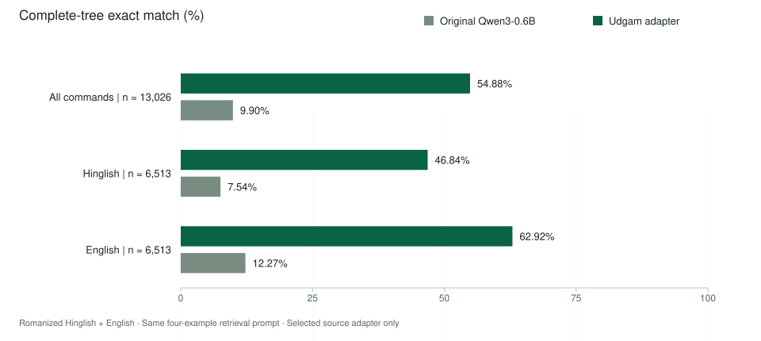

Hinglish Commands / Qwen3-0.6B adapter
Everyday words.
Structured intent.
A small model that turns English and Romanized Hinglish requests into labelled information your app can use.
An experiment by Udgam Labs. Eight command domains.
Open model work, with its results and mistakes documented.
“bed time ka
alarm kab hai?”
- Intent
- Look up an alarm
- Alarm name
- bed time
Your app handles the lookup and response.
No alarm is changed by this model.
One focused task.
Eight domains.
- Alarms
- Events
- Messaging
- Music
- Navigation
- Reminders
- Timers
- Weather
01 / What happens
See what the model sees.
Choose a saved example. Look at the interpretation, then inspect the exact output—including a case where the model gets the meaning wrong.
The request · Romanized Hinglish
bed time ka alarm kab hai?
htop-test-004074-hinglish
Matches the reference
The model identifies an alarm lookup and keeps “bed time” as the alarm name. The original model changed the wording and missed the name.
- Alarm name
- bed time
Plain-language labels explain the saved output. They are not additional model predictions.
Ordered JSON derived from the saved TOP tree. Repeated labels and text order are preserved.
Your app would look up the named alarm and decide how to answer.
Inspect the saved output and human reference
Udgam adapter · saved TOP
Original Qwen · saved TOP
Unchanged human reference
Examples come from Hinglish-TOP and were selected after the final evaluation to illustrate specific outcomes. They are not a representative sample. The reference is the inherited human label, not a new annotation. Generation terminators are omitted from the displayed prediction field.
Inside an application
A small part
of a useful app.
- 1
A person makes a request.
Your interface supplies short English or Romanized Hinglish text. Speech recognition, if needed, is a separate component.
- 2
The model proposes a structure.
It labels the intent and details, preserving an ordered tree. A time phrase such as “kal dopahar” remains a text span.
- 3
Your app decides what to do.
Resolve dates and names, check permissions, ask for confirmation, and handle mistakes. The model itself executes no actions.
02 / The evidence
A measured gain.
A specific benchmark.
complete command trees matched
the reference, up from 9.90%.

What counts as correct?
The entire ordered tree must match the inherited human label, including intents, slots and copied text, after spacing normalization. Getting only the main intent right is not enough.
What does the gain mean?
44.98 percentage points overall. The paired 95% confidence interval is 43.93–46.03 points, based on 2,000 resamples over 6,302 normalized English-source clusters.
What remains difficult?
The tuned model matched 7,149 labels and missed 5,877. These are benchmark results, not a claim of production reliability or general Hindi fluency.
Read the numbers as a table
| Commands | Count | Original Qwen | Udgam adapter |
|---|---|---|---|
| English + Romanized Hinglish | 13,026 | 9.90% | 54.88% |
| Romanized Hinglish | 6,513 | 7.54% | 46.84% |
| English | 6,513 | 12.27% | 62.92% |
Both models used the same four retrieved training examples and generation settings. Bilingual rows are paired. Public benchmark overlap with pretraining cannot be ruled out. The score belongs to the selected source adapter.
Full benchmark and comparison notes03 / Build with it
Your interface.
Your application.
The source package provides a Python interface and a local browser demo. The model weights live separately on Hugging Face once the release is published.
Local loading is offline by default. First-time setup needs the adapter package, exact base weights and dependencies. No PyPI release is advertised.
from udgam_hinglish import CommandParser
parser = CommandParser.from_local(
"/path/to/adapter-package",
device="auto",
)
result = parser.parse(
"bed time ka alarm kab hai?"
)
print(result["tree"])
print(result["checks"])Illustrative usage code. Replace the path with your downloaded package. This page does not execute the code.
Before you use it
A few honest answers.
Is this a chatbot or a voice assistant?
It is a command parser: it returns labelled intent and details for eight benchmark domains. It does not chat generally, recognize speech, fetch live facts or carry out the requested action.
Does it understand Hindi written in Devanagari?
The evaluation covers English and Romanized Hinglish—Hindi/English written in Latin letters. It does not establish Devanagari Hindi or other Indian-language performance.
Can I trust every well-formed result?
No. Format and source-copy checks help detect some failures, but cannot prove the meaning is right. The recorded alarm mistake above produces a valid structure with the wrong intent. Your application needs its own validation, fallback and confirmation flow.
Will it run on my phone or laptop?
It needs a compatible runtime and the base model in addition to the adapter. Local desktop integration has been checked, but this release makes no low-end phone claim. See the quickstart for the supported loading options and measure your own workload.
What changed during training?
We fine-tuned a small Qwen3 model on 4,620 human-labelled training rows: 2,310 paired English/Hinglish entries. The selected adapter uses human data only. The model card records the recipe and the development comparisons.
What are the release terms?
The proposed terms are CC BY-SA 4.0 for the adapter contribution and prepared/retrieval data, with upstream Qwen and Google Apache notices preserved, and Apache 2.0 for Udgam-written code. The complete package is not Apache-only. These draft terms are subject to release review. Read the licence review before reuse.
Source, weights and the full story
Take a closer look.
Prepared for publication under Udgam Labs. These are the intended release locations; publication is still pending.